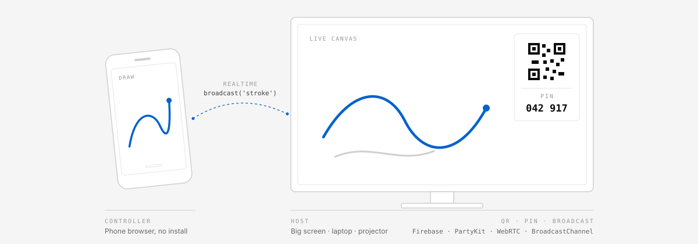
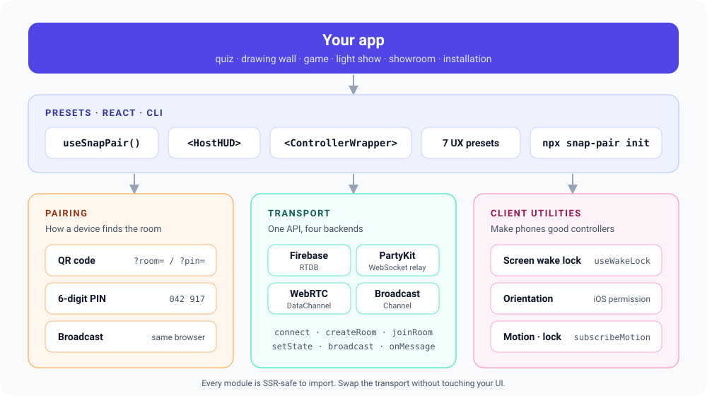
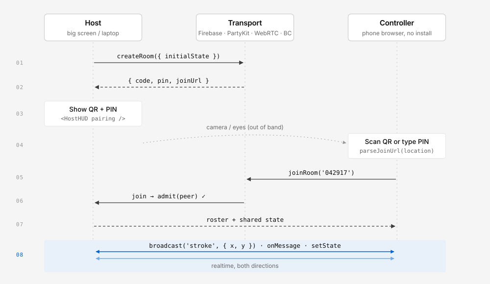
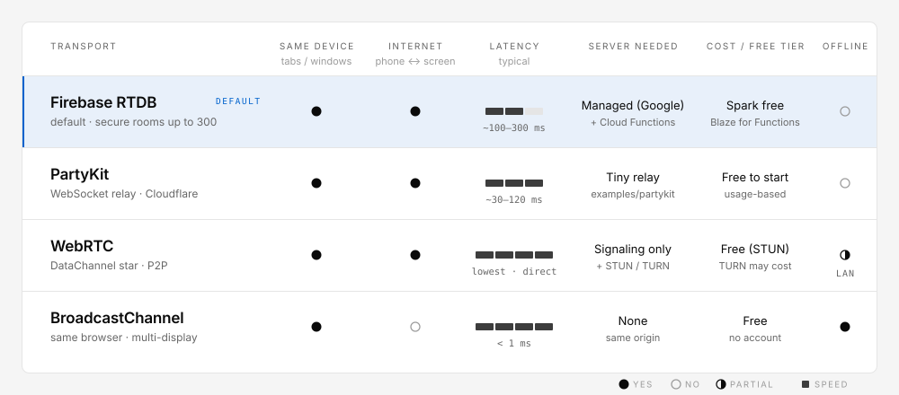

Pairing
How a device finds the room: a QR code that carries the join URL, a 6-digit PIN, a look-alike-free room code, or local broadcast between tabs.
Phone as controller. Big screen as host.
Build multi-screen interactive web experiences. People pair by scanning a QR code or typing a 6-digit PIN in the browser they already have, and every device in the room shares live input and state. Nothing to install.

You bring the product: a quiz, a drawing wall, a game, a light show, a showroom. snap-pair handles pairing, the realtime transport and the phone-side details that are easy to get wrong.
How a device finds the room: a QR code that carries the join URL, a 6-digit PIN, a look-alike-free room code, or local broadcast between tabs.
One Transport API with four backends: Firebase Realtime Database, PartyKit, WebRTC DataChannel and BroadcastChannel. Switch with one line.
Make phones good controllers: screen wake lock, device orientation and motion (including the iOS permission prompt) and screen orientation lock.

Scaffold a new app with the wizard, or add the library to an existing React app.
npx snap-pair initThe wizard asks a few questions (in English or Japanese), writes snap-pair.config.json and scaffolds a preset template.
npm i snap-pair-corepnpm add snap-pair-coreyarn add snap-pair-corebun add snap-pair-coreOptional peers: qrcode (QR in HostHUD) and partysocket (sturdier PartyKit socket).
Two tabs in the same browser, paired with a PIN. Swap the transport class and the same code works across the internet.
import { BroadcastChannelTransport } from 'snap-pair-core';
// Tab 1: the host (big screen)
const host = new BroadcastChannelTransport({ pairing: 'pin' });
await host.connect();
const { pairing } = await host.createRoom({ initialState: { strokes: [] } });
console.log('PIN', pairing.pin); // e.g. '042917'
host.onMessage((m) => draw(m.payload)); // m.type === 'stroke'
// Tab 2: the controller
const ctrl = new BroadcastChannelTransport({ pairing: 'pin' });
await ctrl.connect();
await ctrl.joinRoom('042917');
await ctrl.broadcast('stroke', { x: 0.42, y: 0.17 });The host creates a room and shows how to join. Guests use the camera or a keyboard. Then messages flow both ways in realtime.
The URL carries ?room= or ?pin=. Works with every transport.
useQrRenderer parseJoinUrl
Easy to read aloud. Full-width digits and dashes are normalized. PartyKit, WebRTC, BroadcastChannel.
generatePin verifyPin
Six characters like ABC 234, with no look-alike characters. Firebase's default.
generateRoomCode
Open another tab or window on the same machine. No network involved.
BroadcastChannelTransport

import { HostHUD, useQrRenderer } from 'snap-pair-core';
const renderQr = useQrRenderer(); // undefined without `qrcode`: the HUD shows the code only
<HostHUD pairing={pairing} renderQr={renderQr} peerCount={peers.length} status={status} />All four implement the same Transport interface, so switching is a one-line change. Check transport.capabilities when your UI needs to degrade gracefully.
The default. Firebase Auth identifies each browser, Cloud Functions create rooms and admit guests, and RTDB rules limit what members can write. Built for public rooms of up to 300.
import { FirebaseTransport } from 'snap-pair-core';
import { getAuth } from 'firebase/auth';
import { getDatabase } from 'firebase/database';
import { getFunctions } from 'firebase/functions';
const fb = new FirebaseTransport({
db: getDatabase(), auth: getAuth(), functions: getFunctions(),
maxPlayers: 300,
});
await fb.connect();
const { pairing } = await fb.createRoom({ initialState: { question: 0 } });A tiny WebSocket relay you deploy from examples/partykit/. The host's browser owns the room; the relay only moves frames. Room keys are hashed, so raw PINs never reach the relay.
admitimport { PartyKitTransport } from 'snap-pair-core';
import PartySocket from 'partysocket'; // optional
const party = new PartyKitTransport({
host: 'my-relay.me.partykit.dev',
pairing: 'pin',
socketFactory: (p) => new PartySocket(p),
admit: (peer) => peer.name.length > 0,
});Peer-to-peer DataChannels in a star around the host. Signaling (offer, answer, ICE) rides on any transport with messaging, typically PartyKit. Then room traffic goes directly between devices.
admitimport { PartyKitTransport, WebRTCTransport } from 'snap-pair-core';
const signaling = new PartyKitTransport({ host: 'my-relay.me.partykit.dev', pairing: 'pin' });
const p2p = new WebRTCTransport({
signaling,
iceServers: [{ urls: 'stun:stun.l.google.com:19302' }],
});
p2p.onMessage((m) => console.log(m.type, m.payload, m.from));Tabs and windows of the same browser profile and origin talk directly. No network, no server, no account. Ideal for multi-display installations, kiosks and prototyping.
import { BroadcastChannelTransport, isBroadcastChannelSupported } from 'snap-pair-core';
if (isBroadcastChannelSupported()) {
const local = new BroadcastChannelTransport({ pairing: 'pin', maxPlayers: 4 });
await local.connect();
const { pairing } = await local.createRoom({ initialState: { scene: 0 } });
local.onState((s) => render(s));
}
Each preset ships as a template with a recommended transport. Click a card to see the core of its message flow.
// Controller: batch pointer points once per frame
pad.addEventListener('pointermove', (e) => points.push([e.offsetX / w, e.offsetY / h]));
requestAnimationFrame(function flush() {
if (points.length) transport.broadcast('stroke', { points: points.splice(0) });
requestAnimationFrame(flush);
});
// Host: draw every peer's strokes in its own color
transport.onMessage((m) => m.type === 'stroke' && drawPath(m.from, m.payload.points));// Controller: a tap or a swipe becomes a burst with a direction and force
pad.addEventListener('pointerup', (e) => {
const { dx, dy } = swipeVector(e);
transport.broadcast('blast', { x: e.offsetX / w, y: e.offsetY / h, dx, dy });
});
// Host: spawn particles on the big canvas
transport.onMessage((m) => m.type === 'blast' && emitter.burst(m.payload, colorOf(m.from)));// Controller: type a word, flick it upward to throw
// (on Firebase, which has no ephemeral messaging, write it to your player instead)
form.onsubmit = (e) => {
e.preventDefault();
transport.broadcast('word', { text: input.value.slice(0, 40), angle: lastFlickAngle });
input.value = '';
};
// Host: words fly onto the wall (validate and limit length on the host too)
transport.onMessage((m) => m.type === 'word' && wall.throw(sanitize(m.payload.text), m.payload.angle));// Firebase: secure rooms, each player writes only their own fields
const { room, updateOwnPlayer, updateState, updateRoomStatus } =
useSnapPair({ db, auth, functions, guest: { id: '', name }, maxPlayers: 300 });
// Phone: answer the current question
updateOwnPlayer({ answer: { q: room.state.q, choice: 2 } });
// Host: tally answers live from room.players, then reveal
const tally = countBy(Object.values(room.players), (p) => p.answer?.q === room.state.q && p.answer.choice);// Controller: send button state only when it changes
let last = '';
function onInput(state /* { up, down, left, right, a, b } */) {
const key = JSON.stringify(state);
if (key !== last) { last = key; transport.send({ type: 'pad', payload: state, to: room.hostId }); }
}
// Host: one player per peer id
transport.onMessage((m) => m.type === 'pad' && players.get(m.from)?.setInput(m.payload));import { needsPermission, requestOrientationPermission, subscribeOrientation, useWakeLock } from 'snap-pair-core';
// Controller: iOS needs a tap to grant motion access
startButton.onclick = async () => {
if (needsPermission() && (await requestOrientationPermission()) !== 'granted') return;
subscribeOrientation(throttle(({ beta, gamma }) => transport.broadcast('tilt', { beta, gamma }), 33));
};
// Host: steer the scene
transport.onMessage((m) => m.type === 'tilt' && ship(m.from).steer(m.payload));import { BroadcastChannelTransport } from 'snap-pair-core';
// Every window joins the same local room; the first one hosts
const t = new BroadcastChannelTransport({ pairing: 'pin' });
await t.connect();
// Host window: owns the shared scene
await t.setState({ scene: 'intro', t0: Date.now() });
// Display windows: render their slice of the scene
t.onState((s) => renderSlice(s, window.screenX, window.innerWidth));npx snap-pair init: four ways inThe wizard speaks English or Japanese (detected from your OS language). Pick whichever path matches how you think about the project. Every path writes snap-pair.config.json and scaffolds the matching template.
Choose one of the 7 presets. You get its template and recommended transport.
How many screens and phones? Same room or remote? Need persistence? You get a transport and pairing method that fit.
Start from what you already use: Firebase, PartyKit, plain WebRTC, or nothing yet.
Write a sentence like "audience votes on a stage screen". A rule-based consult suggests a setup you can accept or change.
$ npx snap-pair init ◆ snap-pair multi-screen starter ? How do you want to start? ❯ 1. By UX (pick a preset) 2. By architecture 3. By stack 4. Describe it in words ? Which experience? ❯ Stroke Stream stroke-stream Particle Blast particle-blast Type Throw type-throw Room Quiz / Poll room-quiz-poll Virtual Controller virtual-controller Motion / Sensor motion-sensor Local Multi-Display local-multi-display ✔ Transport: PartyKit (recommended) ✔ Pairing: QR + 6-digit PIN ✔ Wrote snap-pair.config.json ✔ Scaffolded template: stroke-stream
The session above is illustrative. Exact prompts may differ between versions.
Everything is exported from snap-pair-core. Transports, pairing helpers and client utilities are plain TypeScript; only the hooks and components need React.
useSnapPairimport { useSnapPair } from 'snap-pair-core';
// Firebase (default): server-assisted rooms
const sp = useSnapPair({ db, auth, functions, guest: { id: '', name: 'Ada' }, maxPlayers: 8 });
// Any other transport (Phase 3)
const sp = useSnapPair({ transport: party, guest: { id: '', name: 'Ada' } });
const { room, authReady, createRoom, joinRoom, updateState, updateOwnPlayer, updateRoomStatus, leaveRoom } = sp;| Export | Notes |
|---|---|
Transport | Abstract base: connect, rooms, state, send/broadcast, on* subscriptions, capabilities |
FirebaseTransport | RTDB + callable Cloud Functions; server-authoritative joins |
PartyKitTransport | host, party, socketFactory; WebSocket fallback with backoff |
WebRTCTransport | signaling, iceServers; DataChannel star |
BroadcastChannelTransport | Same-origin tabs and windows |
RelayTransport | Shared engine: pairing, maxPlayers, admit, namespace, heartbeats |
| Export | Notes |
|---|---|
generatePin verifyPin | Uniform 6-digit PINs; constant-time compare; normalizePin, isValidPin, formatPin |
deriveRoomId | Hashes a code or PIN into a namespaced room key (works on plain-HTTP LAN too) |
buildPairingJoinUrl parseJoinUrl | ?pin= / ?room= join links |
useQrRenderer | QR rendering via the optional qrcode package; also toQrDataUrl |
generateRoomCode | 6-character room codes without look-alike characters |
| Export | Notes |
|---|---|
useWakeLock | Keeps the controller screen on; re-acquires on visibility change |
requestOrientationPermission | iOS 13+ prompt from a tap; resolves granted / denied / unsupported |
subscribeOrientation subscribeMotion | Orientation angles and acceleration readings |
lockScreenOrientation | Screen orientation lock where supported |
| Export | Notes |
|---|---|
HostHUD | QR, room code, PIN, copyable join link, peer count, status; every label overridable |
ControllerWrapper | Guest-side shell: wake lock, motion permission button, orientation lock, reconnect UI (Phase 3) |
Full reference and the Firebase data layout: README on GitHub.
For people who run events, venues, classes, streams, showrooms or exhibitions and want the audience to join with their own phones. These are separate paths, not steps.
Open the live demo in two tabs. Nothing to install, no account, no card. For two phones, try snap-pair-lite.html.
No download needed. Paste the prompt below into Claude Code, Cursor, Codex, Gemini CLI or a similar tool. The only manual step is a one-time Firebase sign-in click.
Clone the repository, run npm install and npm test, then read the API overview and the design notes in docs/.
Fetch https://raw.githubusercontent.com/takaoumehara/snap-pair-skill/main/SKILL.md
and use it as your build instructions.
Connect these two MCP servers if they aren't connected yet:
- firebase: npx -y firebase-tools@latest mcp
- snap-pair-provisioner: npx -y snap-pair-provisioner
Then help me build: [describe what you want, e.g. "a live quiz game where
guests join by QR code and answer on their phones"].| Goal | Use | Credit card? | Others join by URL? |
|---|---|---|---|
| Learn, experiment, let a child build | Firebase Emulator | No | No, local only |
| Free public demo, small groups | Spark + Lite mode | No | Yes, up to 100 connections |
| Real guests, server-checked rooms | Blaze plan | Yes | Yes |
PartyKit, WebRTC and BroadcastChannel don't need Firebase at all. On Blaze, always set a budget alert.
Auth identifies each browser, Cloud Functions admit participants, and RTDB rules let only members update narrowly scoped fields. Roles, membership, capacity and codes stay server-only.
With PartyKit, WebRTC and BroadcastChannel the host's browser owns the roster and state. Gate entry with admit(peer) and maxPlayers. Room keys are hashed and namespaced.
A 6-digit PIN has 10⁶ values. Rate-limit your public relay, validate payloads, throttle writes, and keep payments in a separate trusted server.
npx snap-pair init and let the wizard decide.maxPlayers and the host browser. WebRTC's star topology suits small groups best.requestOrientationPermission() from a click handler, or use ControllerWrapper, which adds the button for you.window, document or navigator at import time. Create transports inside effects or client components.Transport abstraction, FirebaseTransport, HostHUDnpx snap-pair init (4 paths, en/ja), 7 preset templates, ControllerWrapper, useSnapPair({ transport }), exports map build, WebRTC auto-reconnect and chunking